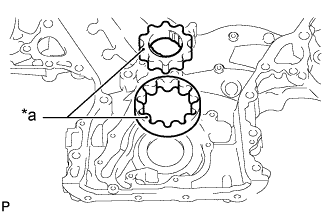

МАСЛЯНЫЙ НАСОС > ПОВТОРНАЯ СБОРКА |
| 1. УСТАНОВИТЕ ПЕРЕПУСКНОЙ КЛАПАН МАСЛЯНОГО НАСОСА |
Смазать перепускной клапан моторным маслом и вставить его и пружину в гнездо клапана.
Установите пробку перепускного клапана.
| 2. УСТАНОВИТЕ КРЫШКУ МАСЛЯНОГО НАСОСА |
Смажьте чистым моторным маслом ведущую и ведомую шестерни.
|  |
Установите ведущую и ведомую шестерни в крышку цепи привода ГРМ метками в сторону крышки масляного насоса.
| *a | Метка |
Установите крышку масляного насоса и закрепите ее 8 болтами и винтом.
 | Болт |
 | Винт |